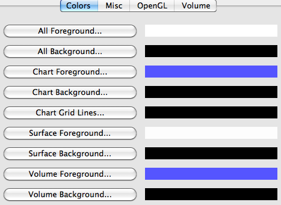
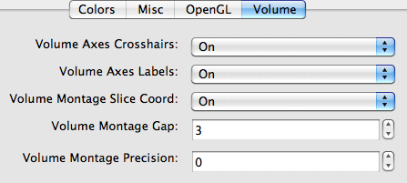

Preferences
Preferences, accessible under the wb_view menu (Mac) or File menu (PC or Linux), allows the user to tailor the Workbench viewing environment to their preference. Preferences changes are saved between Workbench sessions. Options include:
Colors
Buttons to set the Foreground (chart axes, colorbar labels, etc.) and Background colors for All types of views, or Chart, Surface, or Volume views separately.

Misc
Settings for terminal window Logging Level, showing/hiding the Develop Menu, and showing/hiding the Splash Screen.
OpenGL
Setting for the Image Capture Method (OpenGL computer code) used by wb_view to capture an image of the Viewing Window. Changing this setting might resolve problems with image capturing on your system.

Volume
Volume Axes Crosshairs to set On/Off display of axes lines in all Volume views.
Volume Axes Labels to set On/Off display of superior (S)/inferior (I) and left (L)/right (R) axes in all Volume views.
Volume Montage Slice Coord to set On/Off display of x, y, or z coordinate slice position in all Volume slice plane views.
Volume Montage Gap to set the gap (in pixels) between panels of Volume montage views.
Volume Montage Precision to set the decimal point precision of x, y, or z coordinate slice position values in all Volume slice plane views.
